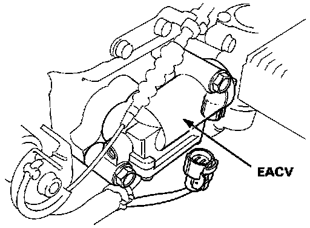
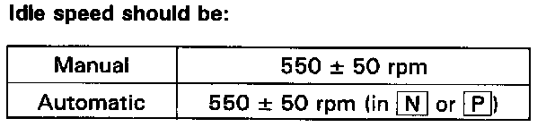

Idle Speed: Testing and Inspection
Idle Speed Inspection / AdjustmentNOTE: (CANADA) Pull the parking brake lever up. Start the engine, then check that the headlights are off.
1. Start the engine and warm it up to normal operating temperature (the cooling fan comes on).
2. Connect a tachometer.

3. Disconnect the 2P connector from the EACV.
4. Start the engine with the accelerator pedal slightly depressed. Stabilize the rpm at 1000, then slowly release the pedal until the engine idles.
5. Check idling in no-load conditions: headlights, blower fan, rear defogger, cooling fan, and air conditioner are not operating.
Idle speed should be:
Manual: 550 ± 50 rpm
Automatic: 550 ± 50 rpm in N or P

Adjust the idle speed, if necessary, by turning the idle adjusting screw.
6. Turn the ignition switch OFF.
7. Reconnect the 2P connector on the EACV, then remove BACK UP fuse in the under-hood fuse/relay box for 10 seconds to reset the ECU.
8. Restart and idle the engine with no-load conditions for one minute, then check the idle speed.
NOTE:
- (CANADA) Pull the parking brake lever up. Start the engine, then check that the headlights are off.
Idle speed should be:
Manual: 700 ± 50 rpm
Automatic: 700 ± 50 rpm in N or P
9. Idle the engine for one minute with headlights (Hi) and rear defogger ON and check the idle speed.
Idle speed should be:
Manual: 770 ± 50 rpm
Automatic: 770 ± 50 rpm in N or P
10. Turn the headlights and rear defogger off. Idle the engine for one minute with heater fan switch at HI and air conditioner on, then check the idle speed.
Idle speed should be:
Manual: 770 ± 50 rpm
Automatic: 770 ± 50 rpm in N or P
NOTE:
- If the idle speed is not within specification, see Diagnosis By Symptom / Idle Control System Troubleshooting Guide. Testing and Inspection